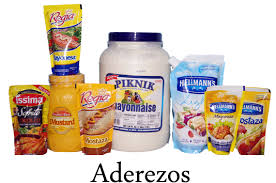
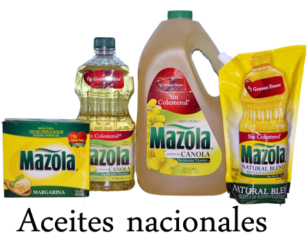
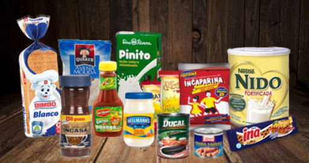
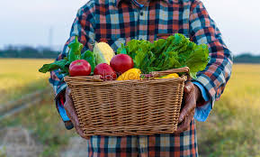
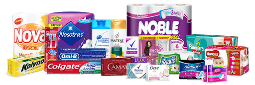

ABARROTERIA DEL "MAR"

Somos proveedores de productos de consumo alimenticio líderes en Liquidambos, Moroceli, Ya con tres años sirviendo a nuestros clientes con una amplia gama de productos .Somos una micro empresa comprometida con desarrollo económico de nuestro municipio, nacimos en la aldea liquidambos para entregar valor diferenciado a nuestros clientes a inicios empezamos distribuyecdo producto atraves de pedidos por WhatsApp realizando entregas a domicio y ahora tenemos para oportunidad de darnos a conocer atravez de esta página web que sera de mucho probecho para nosotros como propietarios y tambien para nuestros clientes porque nos abre la oportunidad para darnos a conocer mejor .
ABARROTERÍA DEL” MAR” fue fundada en el año 2018 con el nombre pulpería del mar y con la ayuda de Dios convirtiéndose en una abarrotería dedicándose a la distribución de productos de la canasta básica entre otros

Contamos con una gran variedad de artículos, buenos precios y excelente ubicación del negocio
Abarrotes, zazonadores, Lacterios, Botanas Confites, Harina, FutasVerduras ,Higiene Personal ,Congelados Huso domesticos






